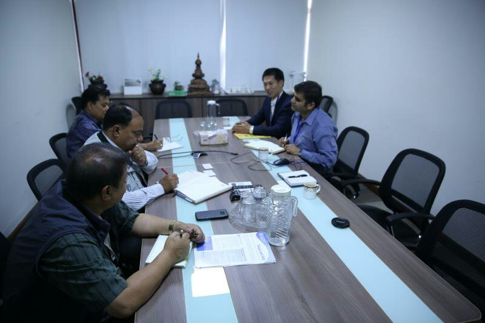

6月9日上午，中国科学院加德满都科教中心(下称科教中心)执行主任梁尔源研究员、副主任维诺德·达瓦迪(Binod Dawadi)、徐田利博士一行访问联合国驻尼泊尔总部，并与联合国粮农组织代表举行会谈。
联合国粮农组织驻尼泊尔官员维诺德·萨哈(Binod Saha)、希拉旺·阿迪卡里(Shrawan Adhikary)等对梁尔源一行访问联合国驻尼泊尔总部表示欢迎。
座谈期间，梁尔源向联合国粮农组织相关负责人介绍了科教中心的研究领域，及与尼泊尔特里布文大学、国际山地综合开发中心等机构的合作情况，以及“第三极环境(TPE)”在应对区域未来环境生态重大挑战问题方面的工作计划。随后，达瓦迪介绍了科教中心最近的工作进展。
萨哈简略介绍了联合国粮农组织在尼泊尔开展的主要工作，尤其是2015年尼泊尔大地震后，粮农组织在抗震救灾等方面的成功经验。
他还表示，尼泊尔相关的科研数据缺乏，并非常希望与科教中心在共同感兴趣的领域展开合作，比如气候变化对农业、森林生态系统的影响等领域。随后，萨哈邀请科教中心的代表参加6月下旬由粮农组织召集的讨论会，希望借此加强双方之间的互相了解，为加强双方合作奠定基础。
最后，维诺德·萨哈再次对科教中心团队的访问表示感谢，并期盼早日进行合作。梁尔源也表示将会及时与联合国粮农组织通报科教中心的主要科研进展，双方在共同感兴趣的领域发挥双方优势，加强合作与交流。(完)

会谈现场